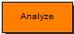

With a double-click on this block, the Simulink model will be analyzed and the Communicator started, if it is not already open. All relevant information for code generation are gathered, transfered to the Communicator and written to the model XML file.